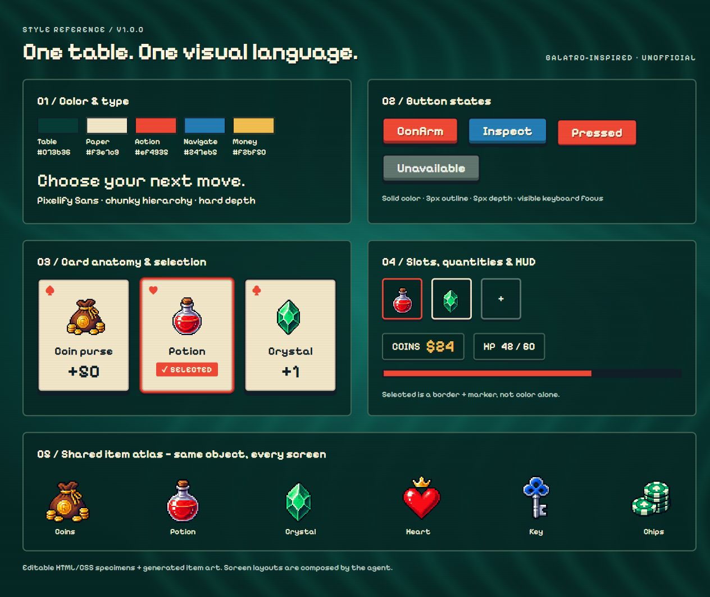
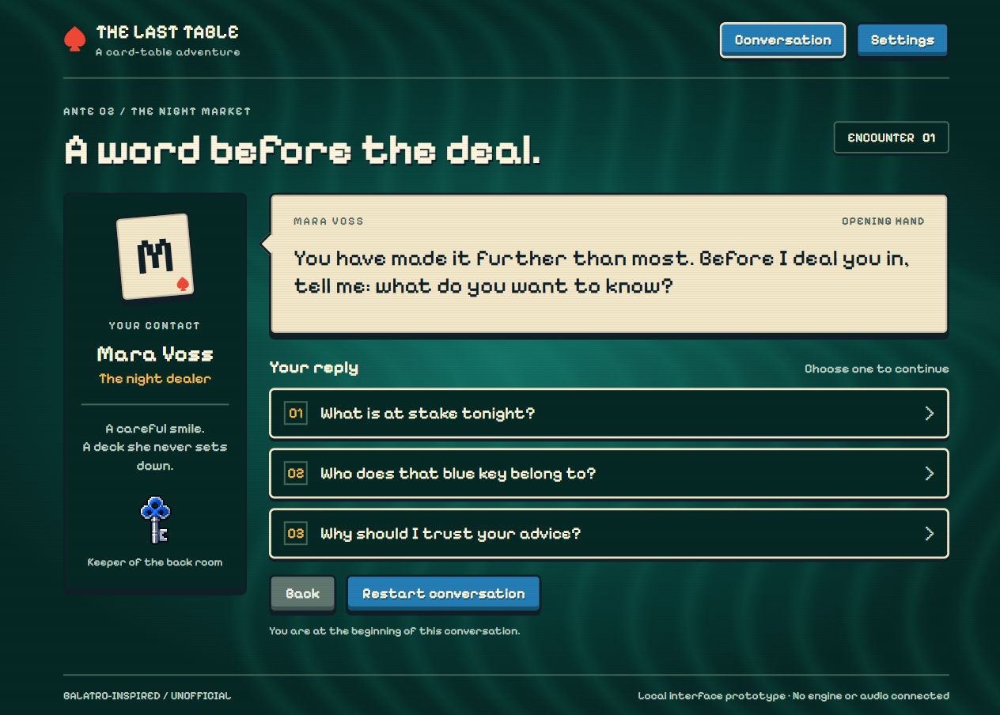
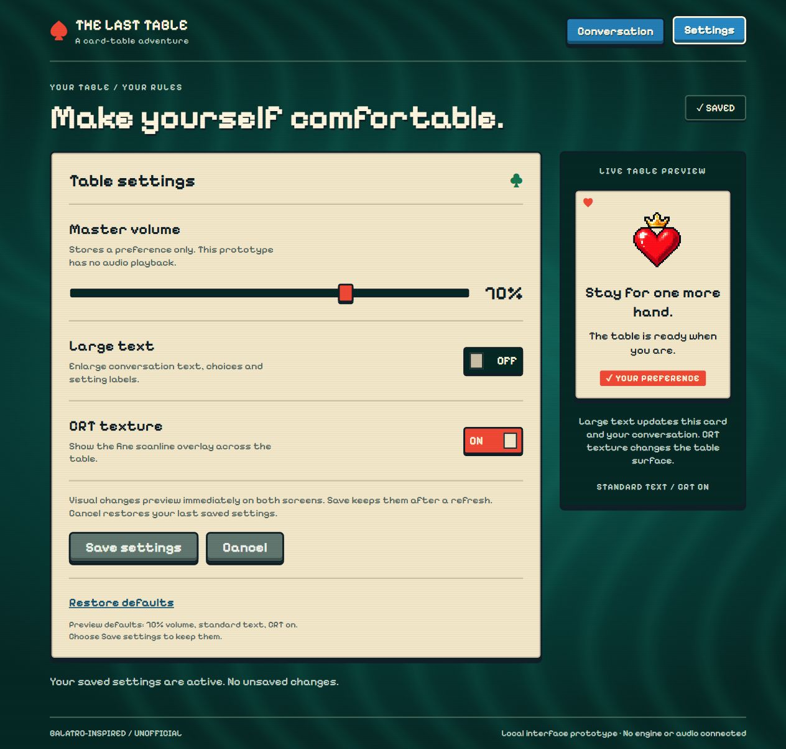

Game UI
Game UIBALATRO-INSPIRED · REFERENCE SKILL · V1.0.0
同一种风格，
五种游戏界面。
把参考图、组件样品和设计规则交给 AI，
先制作奖励、背包与商店，再测试对话和设置。
本地实验版 · Web 可交互样例 · 非官方风格研究

包内组件样品 打开查看 ↗01 / AI OUTPUT
不同的用途，共用一套视觉语言。
同一个独立 AI 根据包内材料完成这一组三屏。下方截图来自浏览器实际渲染，点击可进入对应界面。
RUN 02 / NEW SCREEN TYPES
同一套原包，再做对话与设置。
未参与旧制作的 AI 沿用未改动的 v1.0.0 包，根据新需求制作这两屏，没有获得成品页面。这是同模型新代理的一轮测试，具体操作与限制见下方报告。

04 / DIALOGUE · RUN 02
对话 ↗
查看新类型的对话界面与交互。

05 / SETTINGS · RUN 02
设置 ↗
查看新类型的设置界面与交互。
新增示例不改变原三屏与 Skill 包；下载仍为原 v1.0.0。界面展示不代表跨模型稳定性验证。
02 / WHAT YOUR AI READS
参考、规则、素材，都在包里。

03 / TRY WITH YOUR AGENT
把这个包，交给你的 AI。
解压并保留目录结构，放入 Agent 支持的 Skills 目录；也可以直接让它读取本地 SKILL.md。然后给它你的界面需求。
阅读完整使用说明 ↗一个可以直接改用的需求
使用 balatro-ui Skill。先读取 SKILL.md 和关联规则，并查看参考图、组件板、物品图集。 为我的游戏制作背包界面：12 个格子、分类、物品详情、使用药水。使用 HTML/CSS/JS，复用包内风格与素材，文字和数值可以修改。完成后实际渲染并检查。
04 / VERIFICATION
这次实验，证明到哪一步？
已完成一轮独立 AI 使用测试，浏览器验证结果见下方报告。
这是一轮 Web 原型实验。尚未验证跨模型稳定性、游戏引擎导出或 Figma 编辑文件。参考图与物品图集由 AI 生成；未包含官方游戏资产。字体许可证随包提供。